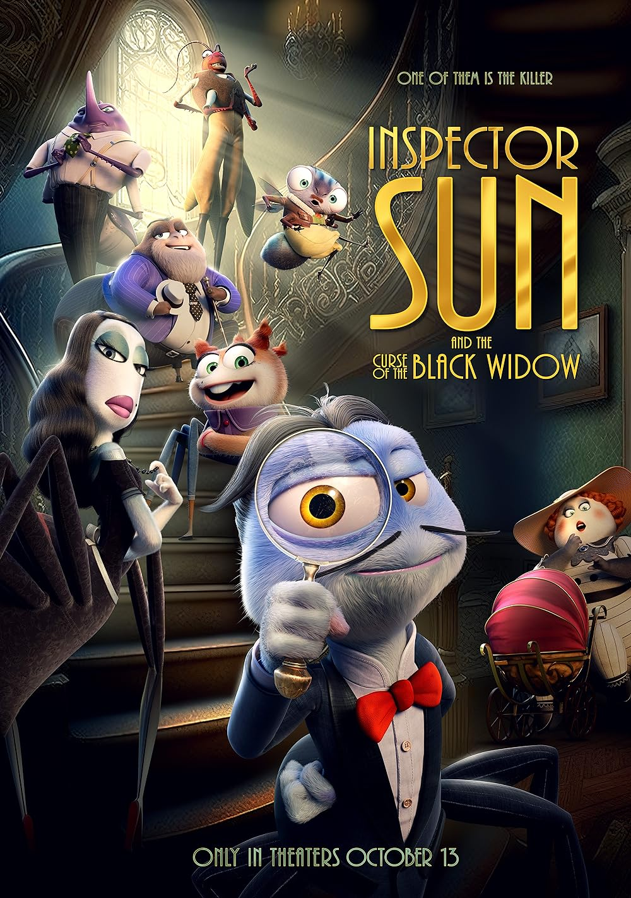

Wonderful for your kids
Find what's best for your kids in our comprehensive list below. Remeber though, while they may be for kids, parents themselves might find themselves loving every moment too.
- Synopsis:
- A noirish fiction set in a seaplane from Shanghai to San Francisco in 1934, the plot follows anthropomorphic spider Inspector Sun in a mission against his foe, the Red Locust, with the mystery vis-à-vis the death of Dr. Spindelthorp as a backdrop.
- Run time:
- 88 Minutes
- Director(s):
- Julio Soto Gúrpide
- Release Date:
- October 13th, 2023
- Distributor:
- Tripictures
- Synopsis:
- An American family moves into Canterville Chase, a stately countryside mansion that has been haunted by the ghost of Sir Simon De Canterville for 300 years. Based on the 1887 Short Story by Oscar Wilde.
- Run time:
- 89 Minutes
- Director(s):
- Kim Burdon and Robert Chandler
- Release Date:
- October 31st, 2023
- Distributor:
- Blue Fox Entertainment

- Synopsis:
- The first in the beloved film series based on the book series of the same name returns to theaters. Relive the magic as your kids explore the wonderous world of Harry Potter.
- Run time:
- 159 Minutes
- Director(s):
- Chris Columbus
- Release Date:
- November 3rd, 2023
- Distributor:
- Warner Bros